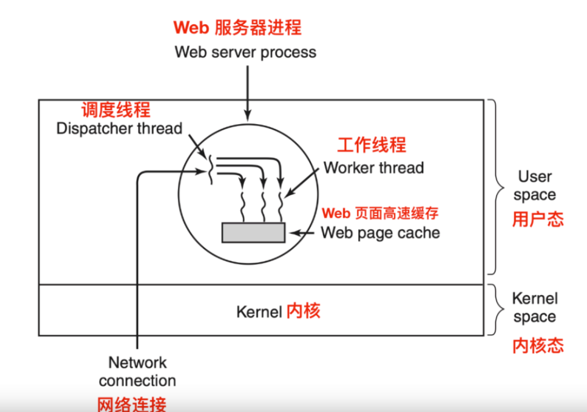
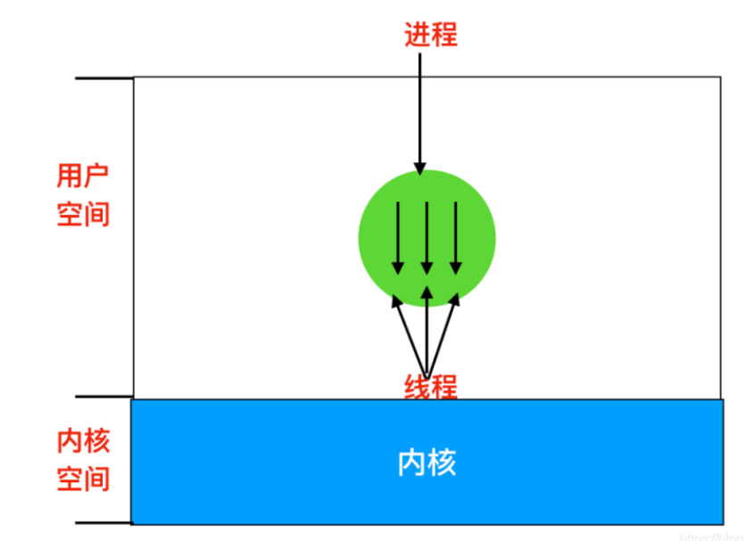
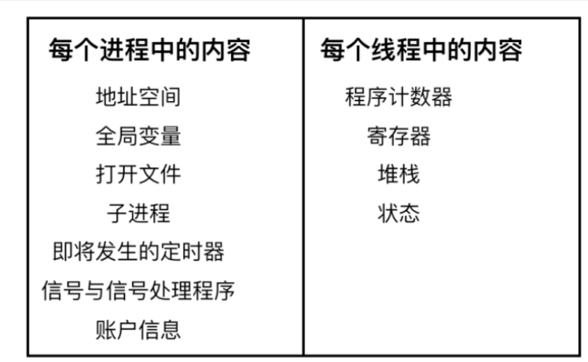
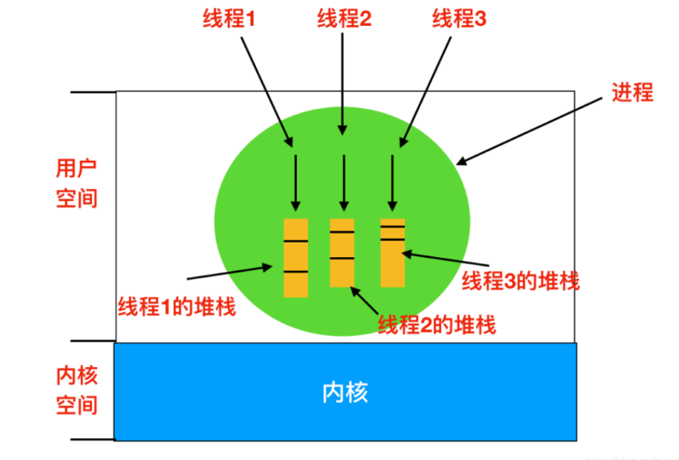

OS--线程
线程详解
线程
- 在传统的操作系统中，每个进程都有一个地址空间和一个控制线程。事实上，这是大部分进程的定义。
- 不过，在许多情况下，
经常存在同一地址空间中运行多个控制线程的情形，这些线程就像是分离的进程。
线程的使用
或许这个疑问也是你的疑问，为什么要在进程的基础上再创建一个线程的概念，准确的说，这其实是进程模型和线程模型的讨论，回答这个问题，可能需要分三步来回答：
•多线程之间会共享同一块地址空间和所有可用数据的能力，这是进程所不具备的
•线程要比进程更轻量级，由于线程更轻，所以它比进程更容易创建，也更容易撤销。在许多系统 中，创建一个线程要比创建一个进程快10-100倍。
•第三个原因可能是性能方面的探讨，如果多个线程都是CPU密集型的，那么并不能获得性能上的 增强，但是如果存在着大量的计算和大量的I/O处理，拥有多个线程能在这些活动中彼此重叠进 行，从而会加快应用程序的执行速度
多线程解决方案
- 现在考虑一个线程使用的例子：一个万维网服务器，对页面的请求发送给服务器，而所请求的页面发送 回客户端。
- 在多数web站点上，
某些页面较其他页面相比有更多的访问。 Web服务器可以把获得大量访问的页面集合保存在内存中，避 免到磁盘去调入这些页面，从而改善性能。- 这种页面的集合称为
高速缓存(cache),高速缓存也应用 在许多场合中，比如说CPU缓存。


编程其实是跟生活息息相关的，编程是可以映射到生活的，比如java是一种面向对象的编程语言，什么是对象，对象是对一组事物的特征抽象和行为抽象，每一个类都有自己的职责跟特点，对应到生活中就是不同职位上的工人，我们程序员对应的是什么角色呢？我们是这个抽象世界的领导者，我们要做的就是按照业务的规则让他们协调有序的工作。
上面这张图理解起来其实很简单。进程间通信的方式有其中，其中一种就是套接字，套接字通信要依赖于端口号，所以基于套接字来说这个服务容器对外的暴漏的入口就是这个端口号。调度线程跟工作线程的关系就是领导者跟员工的关系，网络请求就相当于是客户来了需求，调度线程相当于就是项目经理，工作线程相当于就是程序员，项目经理将各个需求分到各个开发组，分工完成合作。
- 上面是一个web服务器的组织方式，一个叫做
调度线程(dispatcher thread)的线程从网络中读 入工作请求，在调度线程检查完请求后，它会选择一个空闲的(阻塞的)工作线程来处理请求，通常是 将消息的指针写入到每个线程关联的特殊字中。 - 然后
调度线程会唤醒正在睡眠中的工作线程，把工作线 程的状态从阻塞态变为就绪态。 - 当工作线程启动后，它会检查请求是否在web页面的高速缓存中存在，这个高速缓存是所有线程都可 以访问的。
如果高速缓存不存在这个web页面的话，它会调用一个read操作从磁盘中获取页面并且 阻塞线程直到磁盘操作完成。当线程阻塞在硬盘操作的期间，为了完成更多的工作，调度线程可能挑选 另一个线程运行，也可能把另一个当前就绪的工作线程投入运行。- 这种模型允许将服务器编写为顺序线程的集合，在分派线程的程序中包含一个死循环，该循环用来获得 工作请求并且把请求派给工作线程。
每个工作线程的代码包含一个从调度线程接收的请求，并且检查 web高速缓存中是否存在所需页面，如果有，直接把该页面返回给客户，接着工作线程阻塞，等待一个 新请求的到达。如果没有，工作线程就从磁盘调入该页面，将该页面返回给客户机，然后工作线程阻 塞，等待一个新请求。
单线程解决方案
现在考虑没有多线程的情况下，如何编写Web服务器。
- 我们很容易的就想象为单个线程了，Web服务 器的主循环获取请求并检查请求，并争取在下一个请求之前完成工作
- 在等待磁盘操作时，服务器空 转，并且不处理任何到来的其他请求。结果会导致每秒中只有很少的请求被处理
所以这个例子能够说 明多线程提高了程序的并行性并提高了程序的性能
经典的线程模型
理解进程的另一个角度是，用某种方法把相关资源集中在一起。
- 进程有存放程序正文和数据以及其他资源的地址空间。这些资源包括打开的文件、子进程、即将发生的定时器、信号处理程序、账号信息等。把这些信息放在进程里比较好管理
- 另一个概念是，线程中拥有一个执行的线程，通常简写为线程
- 线程会有计数器，用来记录这要执行哪一条指令。线程还拥有寄存器，用来保存线程当前正在使用的变量。线程还会有堆栈，用来记录程序的执行路径
- 尽管线程必须在某个进程内执行，但是进程和线程是完全不同的概念，并且他们可以分开处理。
- 进程用于把资源集中在一起，而线程则是CPU上调度执行的实体
- 线程给进程模型增加了一项内容，即在同一个进程中，允许彼此之间有较大的独立性且互不干扰
- 在一 个进程中并行运行多个线程类似于在一台计算机上运行多个进程。
在多个线程中，各个线程共享同一地 址空间和其他资源。在多个进程中，进程共享物理内存、磁盘、打印机和其他资源。- 因为线程会包含有一些进程的属性，所以线程被称为轻量的进程(lightweight processes)
- 多线程 (multithreading) 一词还用于描述在同一进程中多个线程的情况。
下图中，我们可以看到有一个进程三个线程的情况。每个线程都在相同的地址空间中运行


- 线程不像是进程那样具备较强的独立性。同一个进程中的所有线程都会有完全一样的地址空间，这意味 着它们也共享同样的全局变量。
由于每个线程都可以访问进程地址空间内每个内存地址，因此一个线程 可以读取、写入甚至擦除另一个线程的堆栈。
线程之间除了共享同一内存空间外，还具有如下不同的内 容


- 上图左边的是同一个进程中每个线程共享的内容，上图右边是每个线程中的内容。也就是说左边的列 表是进程的属性，右边的列表是线程的属性。
- 和进程一样，线程可以处于下面这几种状态：
运行中、阻塞、就绪和终止（进程图中没有画） 正在运 行的线程拥有CPU时间片并且状态是运行中。一个被阻塞的线程会等待某个释放它的事件。- 例如，当 一个线程执行从键盘读入数据的系统调用时，该线程就被阻塞直到有输入为止。线程通常会被阻塞，直 到它等待某个外部事件的发生或者有其他线程来释放它。线程之间的状态转换和进程之间的状态转换是 —样的。
每个线程都会有自己的堆栈，如下图所示：


线程系统调用
- 进程通常会从当前的某个单线程开始，然后这个
线程通过调用一个库函数（比如thread.create ） 创建新的线程。 - 线程创建的函数会要求指定新创建线程的名称。创建的线程通常都返回一个线程标识 符，该标识符就是新线程的名字。
- 当一个线程完成工作后，可以通过调用一个函数（比如thread_exit ）来退出
- 紧接着线程消失，状 态变为终止，不能再进行调度。在某些线程的运行过程中，可以通过调用函数例如thread_join , 表示一个线程可以等待另一个线程退出
- 这个过程阻塞调用线程直到等待特定的线程退出。在这种情况 下，线程的创建和终止非常类似于进程的创建和终止。
- 另一个常见的线程是调用thread-yield ,它允许线程自动放弃CPU从而让另一个线程运行。
这样 一个调用还是很重要的，因为不同于进程，线程是无法利用时钟中断强制让线程让出CPU的。
本博客所有文章除特别声明外，均采用 CC BY-SA 4.0 协议 ，转载请注明出处！